2025-11-03
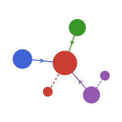
Open-source Julia framework for building and training GNNs.
GraphNeuralNetwork.jl: Stateful graph convolutional layers based on Flux.jl
GNNLux.jl: Stateless graph convolutional layers based on Lux.jl
GNNlib.jl: Basic message passing functions and functional graph convolution layers
GNNGraphs.jl: Graph data structures and helper functions
Created by Carlo Lucibello
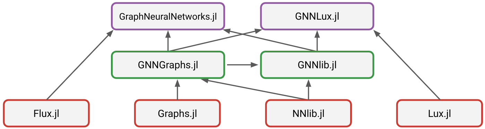
A graph \(G=(V,E)\) is a data structure where \(V\) is the set of nodes and \(E\) is the set of edges (connections between nodes)
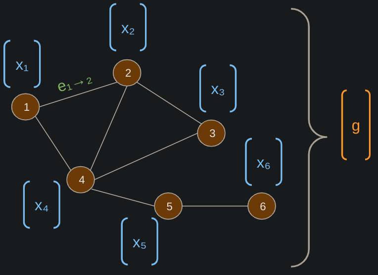
GNN graphs are symmetric directed
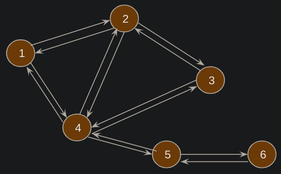
Let’s create a random graph and add node, edge and graph features
4×4 SparseArrays.SparseMatrixCSC{Float64, Int64} with 6 stored entries:
⋅ 1.0 ⋅ 1.0
1.0 ⋅ 2.0 ⋅
⋅ 1.0 ⋅ ⋅
1.0 ⋅ ⋅ ⋅ 1. Every node computes a message for each of its neighbors \[ m_{j \to i} = \phi(x_i, x^{(out)}_j, e_{ij}) \]
2. Each node aggregates incoming messages using a permutation-invariant function \[ \bar{m}_i = \operatorname{aggregate}_{j \in N(i)} m_{j \to i} \]
3. Node updates its attributes based on current features and aggregated messages \[ x_i = \operatorname{update}(x_i, \bar{m}_i) \]
1×10 Matrix{Float64}:
1.01434 1.41533 0.675095 3.03549 1.22701 … 1.56553 0.675095 0.582399After \[ \begin{align*} m_{j \to i} = \phi(x_i, x^{(out)}_j, e_{ij}) \\ \bar{m}_i = \operatorname{aggregate}_{j \in N(i)} m_{j \to i} \end{align*} \] we have to do \[ x_i = \operatorname{update}(x_i, \bar{m}_i) \]
\[ \begin{align*} & \text{Message Passing} \\ m_{j \to i} &= \phi(x_i, x^{(out)}_j, e_{ij}) \\ \bar{m}_i &= \operatorname{agg}_{j \in N(i)} m_{j \to i} \\ x_i' &= \operatorname{update}(x_i, \bar{m}_i) \end{align*} \]
where agg and update are neural networks
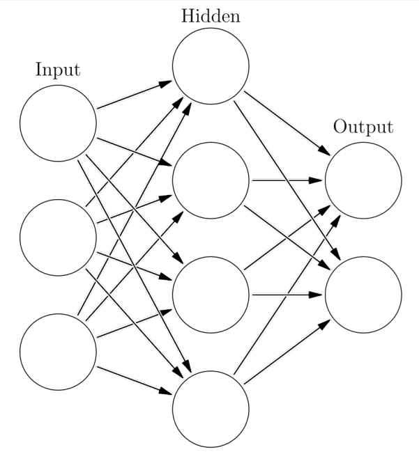
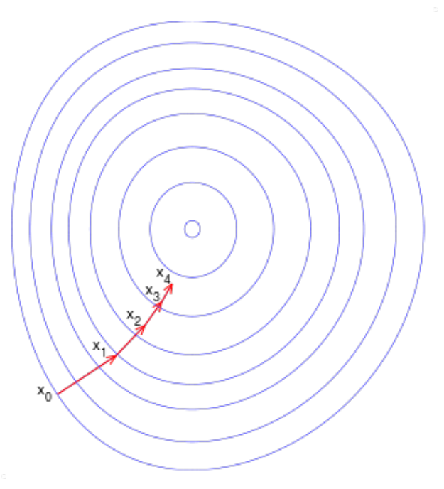
Example:
GNNs can be used for:
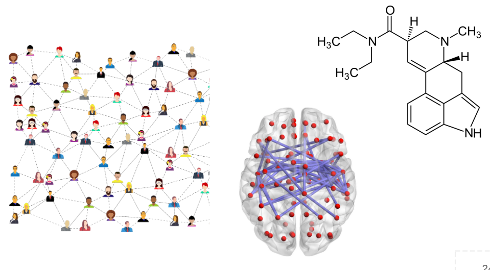
Determining the category of the graph: e.g., what kind of molecule.
Classic approach: pooling of final node features
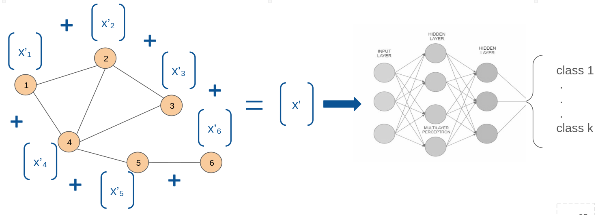
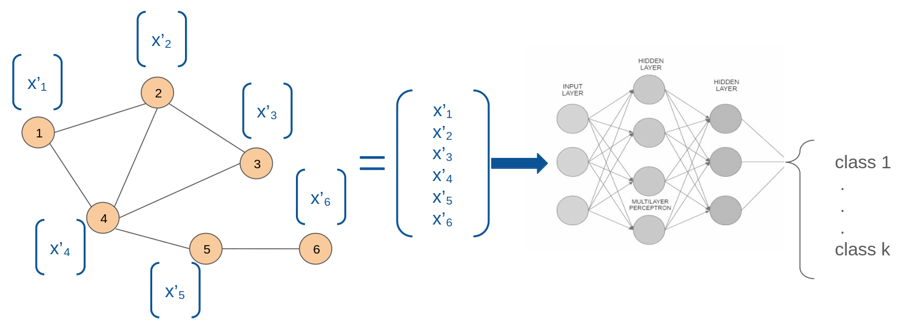
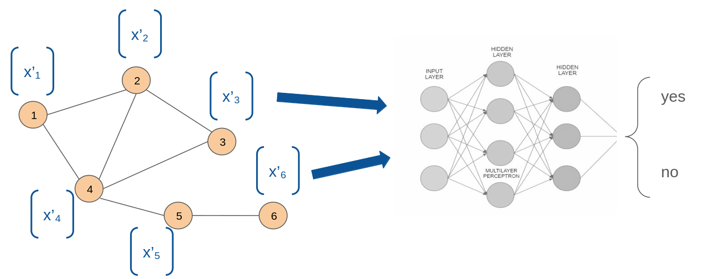
Semi-Supervised Classification with Graph Convolutional Network
- Kipf & Welling 2017 (43k cit.s) \[
\begin{cases}
x'_i &= \sum_{j \in N(i) \cup \{i\}} a_{ij} W x_j \\
a_{ij} &= \frac{1}{\sqrt{|N(i)||N(j)|}}
\end{cases}
\] \[
\begin{cases}
X' &= \sigma(\tilde{D}^{-\frac{1}{2}} \tilde{A} \tilde{D}^{-\frac{1}{2}} X W)\\
\tilde{A} &= A + I_N
\end{cases}
\]
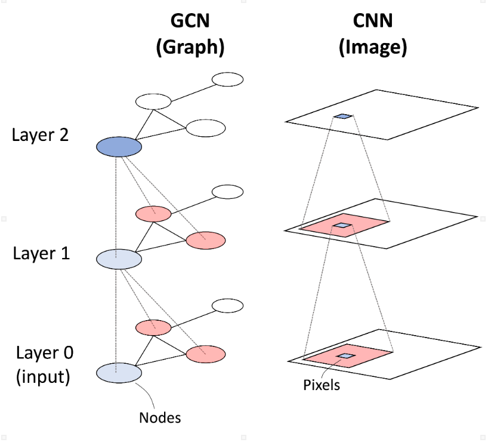
How Powerful are Graph Neural Networks?, Xu et al. 2018 (10k cit.s)
\[ \begin{align*} x'_i &= f_{\theta} \left( (1 + \epsilon) x_i + \sum_{j \in N(i)} x_j \right)\\ X' &= f_{\theta} \left( [(1 + \epsilon) I_N + A] X \right) \end{align*} \] \(f_{\theta}\) learnable function
Theoretical results: GIN is as powerful as Weisfeiler-Lehman graph isomorphism test
Inductive Representation Learning on Large Graphs, Hamilton et al. (18k cit.s) \[ \begin{align*} x^k_{N(i)} &= \text{AGGREGATE}_k \left( x_j^{k-1} : j \in N(i) \right) \\ x^k_i &= f \left( x_i^{k-1} \, || \, x^k_{N(i)} \right) \end{align*} \] \(||\) is the concatenation operator
Graph Attention Networks, Velickovic et al. (14k cit.s)
\[ x'_i = \sigma\left(\sum_{j \in N(i)} \alpha_{ij} W x_j\right) \] where importance \(\alpha_{ij}\) of node \(j\) to node \(i\) uses self attention \[ \alpha_{ij} = \frac{\exp(e_{ij})}{\sum_{k \in N(i)} \exp(e_{ik})}~, \quad e_{ij} = \phi(x_i, x_j) \]
using GraphNeuralNetworks: GNNChain, GCNConv, Dense
model = GNNChain(
GCNConv(3 => 16, relu),
Dense(16 => 8, relu),
Dense(8, 2, identity)
)GNNChain(
GCNConv(3 => 16, relu), # 64 parameters
Dense(16 => 8, relu), # 136 parameters
Dense(8 => 2), # 18 parameters
) # Total: 6 arrays, 218 parameters, 1.164 KiB.Multiple node and edge types, useful for multi-relational data (e.g. user-item interactions…)
Implemented with GNNHeteroGraph type.
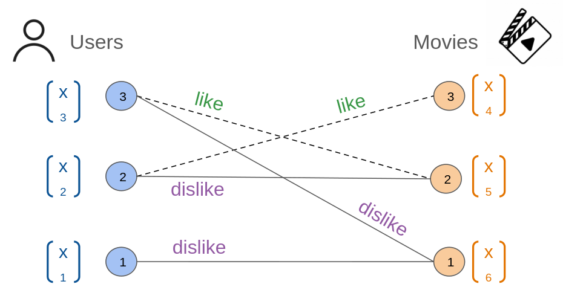
Dict{Tuple{Symbol, Symbol, Symbol}, Int64} with 2 entries:
(:user, :dislike, :user) => 3
(:user, :like, :movie) => 3Recall: \[ \mathbf{x}_i^{(\ell + 1)} = f^{(\ell + 1)}_{\theta} \left( \mathbf{x}_i^{(\ell)}, \left\{ \mathbf{x}_j^{(\ell)} : j \in \mathcal{N}(i) \right\} \right) \]
Famous social network of 34 members of a karate club and links between members who interacted outside the club.
Story: the club split into two after a conflict between the instructor and the club president.
Task: detecting communities that arise from the member’s interaction.
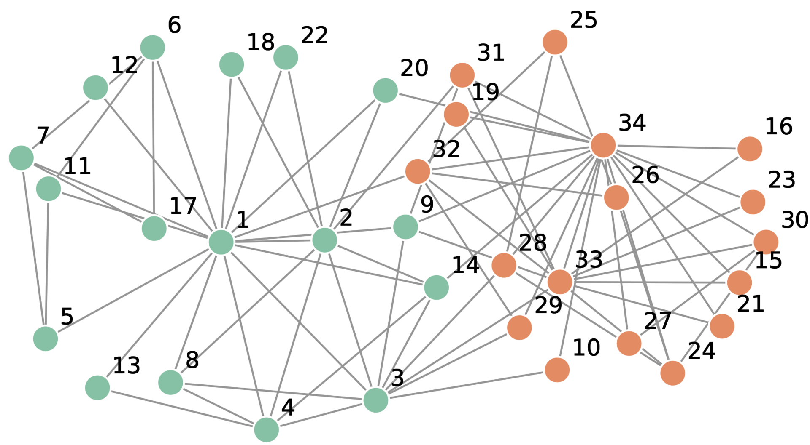
dataset KarateClub:
metadata => Dict{String, Any} with 0 entries
graphs => 1-element Vector{MLDatasets.Graph}Graph:
num_nodes => 34
num_edges => 156
edge_index => ("156-element Vector{Int64}", "156-element Vector{Int64}")
node_data => (labels_clubs = "34-element Vector{Int64}", labels_comm = "34-element Vector{Int64}")
edge_data => nothingGNNGraph and featuresg = mldataset2gnngraph(dataset)
x = zeros(Float32, g.num_nodes, g.num_nodes)
x[diagind(x)] .= 1
labels = g.ndata.labels_comm
y = onehotbatch(labels, 0:3)4×34 OneHotMatrix(::Vector{UInt32}) with eltype Bool:
⋅ ⋅ ⋅ ⋅ ⋅ ⋅ ⋅ ⋅ 1 ⋅ ⋅ ⋅ ⋅ … 1 1 ⋅ ⋅ 1 1 ⋅ 1 1 ⋅ 1 1
1 1 1 1 ⋅ ⋅ ⋅ 1 ⋅ 1 ⋅ 1 1 ⋅ ⋅ ⋅ ⋅ ⋅ ⋅ ⋅ ⋅ ⋅ ⋅ ⋅ ⋅
⋅ ⋅ ⋅ ⋅ ⋅ ⋅ ⋅ ⋅ ⋅ ⋅ ⋅ ⋅ ⋅ ⋅ ⋅ 1 1 ⋅ ⋅ 1 ⋅ ⋅ 1 ⋅ ⋅
⋅ ⋅ ⋅ ⋅ 1 1 1 ⋅ ⋅ ⋅ 1 ⋅ ⋅ ⋅ ⋅ ⋅ ⋅ ⋅ ⋅ ⋅ ⋅ ⋅ ⋅ ⋅ ⋅COO (coordinate) format. For each edge, two node indices (source, dest)
([1, 1, 1, 1, 1, 1, 1, 1, 1, 1 … 34, 34, 34, 34, 34, 34, 34, 34, 34, 34], [2, 3, 4, 5, 6, 7, 8, 9, 11, 12 … 21, 23, 24, 27, 28, 29, 30, 31, 32, 33])Good for sparse graphs.
Add mask selecting the nodes to be used for training
g.num_nodes = 34
g.num_edges = 156
g.num_edges / g.num_nodes = 4.588235294117647
sum(g.ndata.train_mask) = 4
mean(g.ndata.train_mask) = 0.11764705882352941
has_isolated_nodes(g) = false
has_self_loops(g) = false
is_bidirected(g) = trueAll graph algorithms available!
Graph conv. layer GCNConv: \(\mathbf{x}_v^{(\ell + 1)} = \mathbf{W}^{(\ell + 1)} \sum_{w \in \mathcal{N}(v) \, \cup \, \{ v \}} \frac{1}{c_{w,v}} \cdot \mathbf{x}_w^{(\ell)}\)
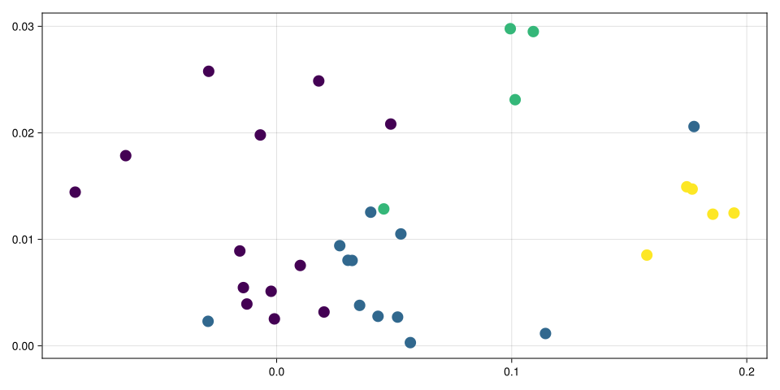
Observation: strong inductive bias
model = GCN(num_features, num_classes)
opt = Flux.setup(Adam(1e-2), model)
epochs = 2000
emb = h
report(epoch, loss, h) = @info (; epoch, loss)
report(0, 10.0, emb)
for epoch in 1:epochs
loss, grad = Flux.withgradient(model) do model
ŷ, emb = model(g, g.ndata.x)
logitcrossentropy(ŷ[:, train_mask],
y[:, train_mask])
end
Flux.update!(opt, model, grad[1])
(epoch % 100 == 0) && report(epoch, loss, emb)
end[ Info: (epoch = 0, loss = 10.0)
[ Info: (epoch = 100, loss = 0.52507204f0)
[ Info: (epoch = 200, loss = 0.25852412f0)
[ Info: (epoch = 300, loss = 0.16490443f0)
[ Info: (epoch = 400, loss = 0.11525674f0)
[ Info: (epoch = 500, loss = 0.08534312f0)
[ Info: (epoch = 600, loss = 0.066047475f0)
[ Info: (epoch = 700, loss = 0.05258251f0)
[ Info: (epoch = 800, loss = 0.042966828f0)
[ Info: (epoch = 900, loss = 0.035799187f0)
[ Info: (epoch = 1000, loss = 0.03030054f0)
[ Info: (epoch = 1100, loss = 0.025980728f0)
[ Info: (epoch = 1200, loss = 0.02252206f0)
[ Info: (epoch = 1300, loss = 0.019705102f0)
[ Info: (epoch = 1400, loss = 0.017378137f0)
[ Info: (epoch = 1500, loss = 0.015429541f0)
[ Info: (epoch = 1600, loss = 0.013783365f0)
[ Info: (epoch = 1700, loss = 0.012396403f0)
[ Info: (epoch = 1800, loss = 0.0111664785f0)
[ Info: (epoch = 1900, loss = 0.010116866f0)
[ Info: (epoch = 2000, loss = 0.009200111f0)Train accuracy:
Test accuracy:
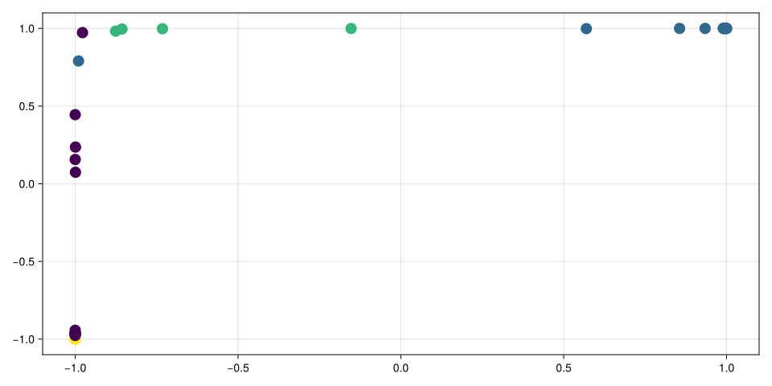